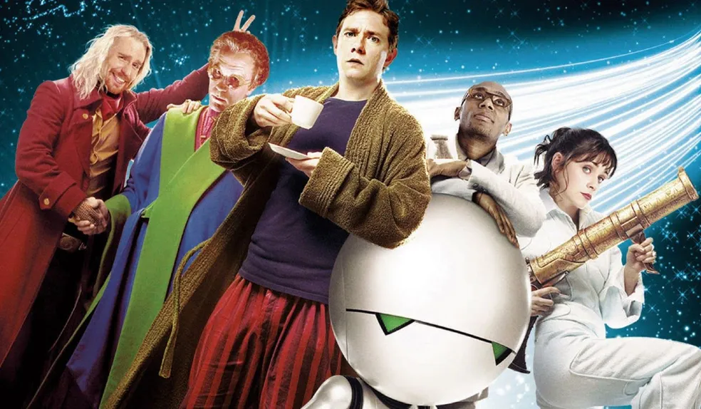
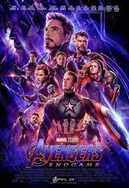

Mundo de filme da cultura Geek
Filme da cultura geek

A cultura geek, outrora um nicho discreto, explodiu em popularidade,
permeando diversas formas de entretenimento. No cinema, essa ascensão é
inegável, com filmes que antes eram considerados "de nicho" dominando
bilheterias e corações ao redor do mundo. Essas produções não são apenas
sobre super-heróis em collants ou naves espaciais; elas representam um
universo rico em narrativas complexas, personagens memoráveis e, acima
de tudo, uma profunda conexão com seus fãs. Os filmes da cultura geek
abrangem uma vasta gama de gêneros e temas. Desde as épicas sagas de
fantasia como "O Senhor dos Anéis" e "Harry Potter", que transportam o
espectador para mundos mágicos repletos de criaturas fantásticas e
jornadas heroicas, até as complexas narrativas de ficção científica como
"Star Wars" e "Blade Runner", que exploram o futuro da humanidade, a
tecnologia e questões existenciais profundas. Os super-heróis, é claro,
ocupam um lugar de destaque nesse panorama. O Universo Cinematográfico
Marvel (MCU) e as produções da DC Comics trouxeram para as telas
personagens icônicos dos quadrinhos, com narrativas interconectadas,
efeitos visuais impressionantes e um apelo que transcende gerações.
Filmes como "Vingadores: Ultimato" e "Mulher-Maravilha" não são apenas
blockbusters, mas também marcos culturais que refletem anseios e
discussões contemporâneas. Além dos grandes estúdios, o cinema geek
também celebra adaptações de videogames, como "The Super Mario Bros.
Filme", animes e mangás, como as diversas adaptações de "Dragon Ball", e
até mesmo filmes que exploram a própria cultura geek, como "Scott
Pilgrim Contra o Mundo". Cada um desses nichos contribui para a
diversidade e riqueza desse universo cinematográfico. O que torna esses
filmes tão especiais para a comunidade geek? A resposta reside na paixão
compartilhada por esses universos, na identificação com os personagens
muitas vezes marginalizados ou "diferentes", e na celebração da
imaginação e da criatividade. Os filmes geek proporcionam um senso de
pertencimento, geram debates acalorados sobre teorias e detalhes, e
inspiram a criação de fan art, cosplay e outras formas de expressão. No
entanto, a cultura geek no cinema também enfrenta desafios. A saturação
do mercado com filmes de super-heróis, a pressão por sequências e
universos compartilhados, e a preocupação com a fidelidade às obras
originais são temas constantes de discussão entre os fãs. Apesar disso,
o futuro dos filmes da cultura geek parece promissor. A constante
evolução da tecnologia permite a criação de mundos visuais cada vez mais
imersivos, e a crescente diversidade de vozes na indústria traz novas
perspectivas e narrativas para as telas. Em suma, os filmes da cultura
geek são mais do que simples entretenimento. Eles são portais para
mundos fantásticos, reflexões sobre a nossa sociedade e, acima de tudo,
uma celebração da imaginação e da comunidade. Seja você um fã de longa
data ou um recém-chegado a este universo, há sempre uma nova aventura
cinematográfica esperando para ser descoberta. Prepare a pipoca e
embarque nessa jornada épica!

Avengers: Endgame (bra: Vingadores: Ultimato;[4] prt: Vingadores: Endgame)[5] é um filme de super-herói americano de 2019, baseado na equipe Vingadores da Marvel Comics.
Produzido pela Marvel Studios e distribuído pela Walt Disney Studios Motion Pictures, é a sequência direta de Avengers: Infinity War (2018) e o vigésimo segundo filme do
Universo Cinematográfico Marvel (UCM). Dirigido pelos Irmãos Russo e escrito por Christopher Markus e Stephen McFeely, o filme apresenta um ensemble cast, composto por
Robert Downey Jr., Chris Evans, Mark Ruffalo, Chris Hemsworth, Scarlett Johansson, Jeremy Renner, Don Cheadle, Paul Rudd, Brie Larson, Karen Gillan, Danai Gurira, Benedict
Wong, Jon Favreau, Bradley Cooper, Gwyneth Paltrow e Josh Brolin. No filme, os membros sobreviventes dos Vingadores e seus aliados trabalham para reverter os danos causados
por Thanos em Infinity War.